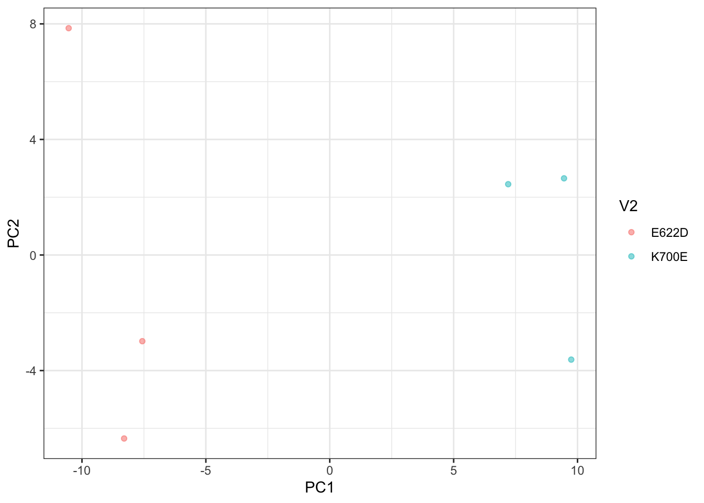
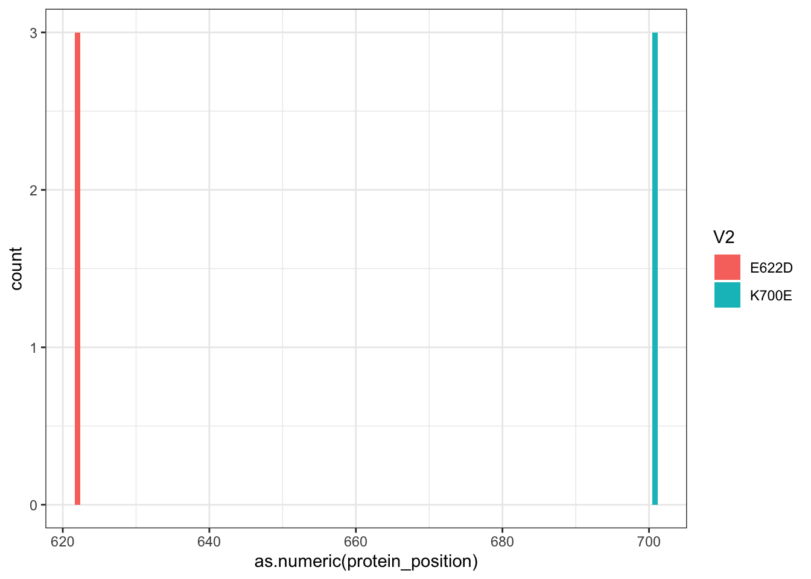
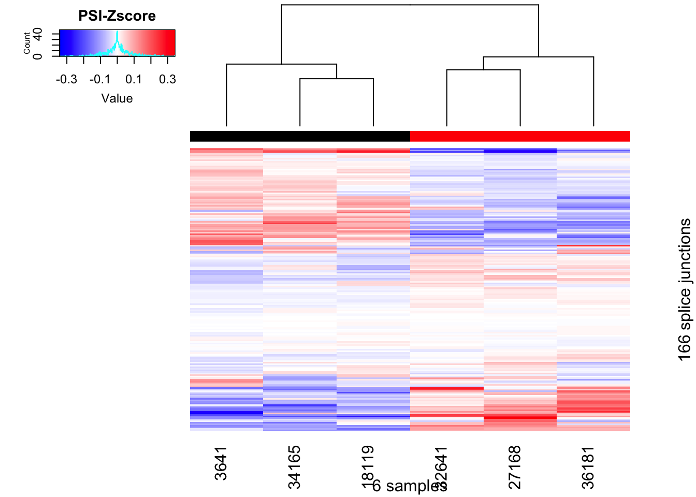

Last updated: 2019-07-24
Checks: 6 1
Knit directory: ~/Documents/Basu-Li-Labs/Current-Repos/snaptron-analysis/analysis/
This reproducible R Markdown analysis was created with workflowr (version 1.4.0). The Checks tab describes the reproducibility checks that were applied when the results were created. The Past versions tab lists the development history.
The R Markdown file has unstaged changes. To know which version of the R Markdown file created these results, you’ll want to first commit it to the Git repo. If you’re still working on the analysis, you can ignore this warning. When you’re finished, you can run wflow_publish to commit the R Markdown file and build the HTML.
Great job! The global environment was empty. Objects defined in the global environment can affect the analysis in your R Markdown file in unknown ways. For reproduciblity it’s best to always run the code in an empty environment.
The command set.seed(20190618) was run prior to running the code in the R Markdown file. Setting a seed ensures that any results that rely on randomness, e.g. subsampling or permutations, are reproducible.
Great job! Recording the operating system, R version, and package versions is critical for reproducibility.
Nice! There were no cached chunks for this analysis, so you can be confident that you successfully produced the results during this run.
Great job! Using relative paths to the files within your workflowr project makes it easier to run your code on other machines.
Great! You are using Git for version control. Tracking code development and connecting the code version to the results is critical for reproducibility. The version displayed above was the version of the Git repository at the time these results were generated.
Note that you need to be careful to ensure that all relevant files for the analysis have been committed to Git prior to generating the results (you can use wflow_publish or wflow_git_commit). workflowr only checks the R Markdown file, but you know if there are other scripts or data files that it depends on. Below is the status of the Git repository when the results were generated:
Ignored files:
Ignored: .DS_Store
Ignored: .Rhistory
Ignored: .Rproj.user/
Ignored: analysis/.DS_Store
Ignored: analysis/.Rproj.user/
Ignored: data/.DS_Store
Ignored: output/.DS_Store
Ignored: output/snakemake_out_sf3b1_k700e_e622d_ds/.DS_Store
Ignored: output/snakemake_out_sf3b1_nalm6_k700e_wt_ds/.DS_Store
Untracked files:
Untracked: analysis/20190719_sf3b1_nalm6_k700e_wt_ds.Rmd
Untracked: analysis/20190723_sf3b1_e622d_wt_ds.Rmd
Untracked: analysis/20190723_sf3b1_k700e_wt_ds.Rmd
Untracked: docs/figure/20190627_DiffSplicingBloodSf3b1_MostlyMarrow.Rmd/
Untracked: output/snakemake_out_sf3b1_k700e_e622d_ds/leafcutter.ds.cluster_sig.txt
Unstaged changes:
Modified: analysis/20190715_sf3b1_k700e_e622d_ds.Rmd
Deleted: analysis/20190715_sf3b1_nalm6_k700e_wt_ds.Rmd
Modified: data/other_snakemake_data/sf3b1_e622d_wt_ds.groups.txt
Modified: data/other_snakemake_data/sf3b1_k700e_wt_ds.groups.txt
Note that any generated files, e.g. HTML, png, CSS, etc., are not included in this status report because it is ok for generated content to have uncommitted changes.
These are the previous versions of the R Markdown and HTML files. If you’ve configured a remote Git repository (see ?wflow_git_remote), click on the hyperlinks in the table below to view them.
| File | Version | Author | Date | Message |
|---|---|---|---|---|
| Rmd | 805a58a | stephst33 | 2019-07-23 | Saved 7/23 |
library(data.table)
library(dplyr)
library(ggplot2)
library(reshape2)
library(readxl)
library(ggrepel)
library(tidyverse)
library(gplots)
library(knitr)
library("RColorBrewer")Numers <- '../output/snakemake_out_sf3b1_k700e_e622d_ds/CountTableNumerators.gz'
Denoms <- '../output/snakemake_out_sf3b1_k700e_e622d_ds/CountTableDenominators.gz'
NumeratorCountTable <- fread(paste0("gunzip -c ", Numers), sep=" ", header=TRUE, data.table=FALSE)
DenominatorCountTable <- fread(paste0("gunzip -c ", Denoms), sep=" ", header=TRUE, data.table=FALSE)
PSI_Table <- NumeratorCountTable[-1]/DenominatorCountTable[-1]
row.names(PSI_Table) <- gsub(":clu_.+", "", NumeratorCountTable$chrom)
#Replace NaNs from 0/0 operation
PSI_Table[is.na(PSI_Table)] <- 0
#Differential Junctions List - Darman
#DifferentialJunctionsList <- read.table('../data/other_snakemake_data/DarmanDiffJunctions.LiftedToHg38.bed', header=F)
# Make new id, for easier use in later filtering. Note that coordinates may need to add 1 -Darman
#DifferentialJunctionsList$junc_id <- paste(DifferentialJunctionsList$V1, #DifferentialJunctionsList$V2 + 1, DifferentialJunctionsList$V3 + 1, sep=":")
#Differential Junctions List - leafcutter ID'd junctions:
#Read in cluster sig text file as data frame and filter for junctions #with p value <0.1.
SigJcns <- read.delim('../output/snakemake_out_sf3b1_k700e_e622d_ds/leafcutter.ds.cluster_sig.txt.gz') %>%
filter(p.adjust <= 0.1, .preserve= TRUE)
#Get chromosome/junction coords for the selected samples
#Read in effect sizes text file, add chr:clu_ID_- in same format as "cluster" column in SigJcns, filter for chr:cluster_IDs that match those specified in SigJcns data frame.
DifferentialJunctionsList <- read.delim('../output/snakemake_out_sf3b1_k700e_e622d_ds/leafcutter.ds.effect_sizes.txt.gz', header=T) %>%
separate("intron", c("chrom", "junc_start", "junc_end", "cluster"), ":") %>%
mutate(chr_clust= paste(chrom, cluster, sep = ":", collapse = NULL)) %>%
filter(chr_clust %in% SigJcns$cluster, .preserve= T)
# Make new id, for easier use in later filtering. Note that coordinates may need to add 1 - leafcutter ID'd jcns
DifferentialJunctionsList$junc_id <- paste(DifferentialJunctionsList$chrom, DifferentialJunctionsList$junc_start, DifferentialJunctionsList$junc_end, sep=":")
# PCA using PSI
PCResults <- (PSI_Table) %>%
filter(rownames(.) %in% DifferentialJunctionsList$junc_id) %>%
t() %>%
prcomp(center=T, scale=T)
PCResults.df <- as.data.frame(PCResults$x[,1:5]) %>% rownames_to_column()
#Read in groups table
Groups <- read.delim("../data/other_snakemake_data/sf3b1_k700e_e622d_ds.groups.txt", na.strings = "NA", stringsAsFactors = T, header=F)
MutationList <- data.frame(read_excel("../data/other_snakemake_data/SeillerEtAl_MutationList.xlsx"))
# Groups table with rail_ID column
Simplified_Groups<- Groups %>%
mutate(rail_id = sub(".project2.yangili1.snaptron.processed_to_bedfiles.SRA2.","", V1)) %>%
mutate(protein_position= ifelse(V2== "K700E", sub("K700E", "700", V2), sub("E622D", "622", V2)))
#Merging Groups (rail_id and V2, or mutation) with PCResults.df into ToPlot
ToPlot <- PCResults.df %>%
mutate(rail_id = sub(".project2.yangili1.snaptron.processed_to_bedfiles.SRA2.","", rowname)) %>%
left_join(Simplified_Groups, by= NULL)
# plot PCResults.df PC1 and PC2, with labels= V2)
ggplot(ToPlot,aes(x=PC1, y=PC2, label= NULL, color= V2)) +
# geom_text(alpha=1, size=2.2) +
geom_point(alpha=0.5) +
#geom_text_repel(size=2.2) +
theme_bw()
The below histogram was originally intended to compare the position of sf3b1 mutations in dif cancers. Since we are only comparing 2 sf3b1 mutations in this case, it’s kind of a useless plot.
#Plot hotspots
Simplified_Groups %>%
# filter(Cohort %in% c("LAML", "SKCM", "BRCA", "BLCA", "THYM", "UCEC", "UVM")) %>%
# filter(rail_id %in% c("SF3B1")) %>%
ggplot(aes(as.numeric(protein_position))) +
geom_histogram(aes(fill=V2),position="dodge", bins=50) +
theme_bw()
# geom_density(aes(color=Cohort_simplified))It will also be nice to look at a heatmap of this feature space from which the PCA is based on.
set.seed(0)
K700E<-ToPlot %>%
filter(V2 =="K700E") %>%
dplyr::pull(rowname)
E622D<-ToPlot %>%
filter(V2 =="E622D") %>%
sample_n(3) %>%
dplyr::pull(rowname)
Heatmap <- PSI_Table %>%
filter(rownames(.) %in% DifferentialJunctionsList$junc_id) %>%
dplyr::select(c(K700E, E622D)) %>% as.matrix() %>%
t() %>% scale(scale=F) %>% t() %>% as.data.frame() %>% drop_na() %>% as.matrix()
#
# Heatmap <- t(scale(t(as.matrix(PSI_Table[1:10, c(Cases, Controls)]))))
# Heatmap <- scale(as.matrix(PSI_Table[1:50,c(Cases, Controls)]))
RNAExtractionDate <- as.character(unclass(factor(plyr::mapvalues(colnames(Heatmap), from=ToPlot$rowname, to=ToPlot$V2, warn_missing = FALSE) )))
RNAExtractionDate <- as.character(unclass(factor(plyr::mapvalues(colnames(Heatmap), from=ToPlot$rowname, to=ToPlot$V2, warn_missing = FALSE) )))
ColLabel = labCol <- plyr::mapvalues(colnames(Heatmap), from=ToPlot$rowname, to=ToPlot$rail_id, warn_missing = FALSE)
heatmap.2(Heatmap, col=colorRampPalette(c("blue", "white", "red"))(n = 299), dendrogram="column", trace="none", labRow="", labCol=ColLabel, ColSideColors=RNAExtractionDate, key.title="PSI-Zscore", ylab="166 splice junctions", xlab="6 samples")
sessionInfo()R version 3.5.1 (2018-07-02)
Platform: x86_64-apple-darwin15.6.0 (64-bit)
Running under: macOS High Sierra 10.13.6
Matrix products: default
BLAS: /Library/Frameworks/R.framework/Versions/3.5/Resources/lib/libRblas.0.dylib
LAPACK: /Library/Frameworks/R.framework/Versions/3.5/Resources/lib/libRlapack.dylib
locale:
[1] en_US.UTF-8/en_US.UTF-8/en_US.UTF-8/C/en_US.UTF-8/en_US.UTF-8
attached base packages:
[1] stats graphics grDevices utils datasets methods base
other attached packages:
[1] RColorBrewer_1.1-2 knitr_1.23 gplots_3.0.1.1
[4] forcats_0.4.0 stringr_1.4.0 purrr_0.3.2
[7] readr_1.3.1 tidyr_0.8.3 tibble_2.1.1
[10] tidyverse_1.2.1 ggrepel_0.8.1 readxl_1.3.1
[13] reshape2_1.4.3 ggplot2_3.2.0 dplyr_0.8.3
[16] data.table_1.12.2
loaded via a namespace (and not attached):
[1] gtools_3.8.1 tidyselect_0.2.5 xfun_0.6
[4] haven_2.1.0 lattice_0.20-35 colorspace_1.4-1
[7] generics_0.0.2 htmltools_0.3.6 yaml_2.2.0
[10] rlang_0.4.0 pillar_1.3.1 glue_1.3.1
[13] withr_2.1.2 modelr_0.1.4 plyr_1.8.4
[16] munsell_0.5.0 gtable_0.3.0 workflowr_1.4.0
[19] cellranger_1.1.0 rvest_0.3.3 caTools_1.17.1.2
[22] evaluate_0.13 labeling_0.3 broom_0.5.2
[25] Rcpp_1.0.1 KernSmooth_2.23-15 scales_1.0.0
[28] backports_1.1.4 gdata_2.18.0 jsonlite_1.6
[31] fs_1.2.7 hms_0.4.2 digest_0.6.18
[34] stringi_1.4.3 grid_3.5.1 rprojroot_1.3-2
[37] bitops_1.0-6 cli_1.1.0 tools_3.5.1
[40] magrittr_1.5 lazyeval_0.2.2 crayon_1.3.4
[43] whisker_0.3-2 pkgconfig_2.0.2 xml2_1.2.0
[46] lubridate_1.7.4 assertthat_0.2.1 rmarkdown_1.12
[49] httr_1.4.0 rstudioapi_0.10 R6_2.4.0
[52] nlme_3.1-137 git2r_0.26.1 compiler_3.5.1